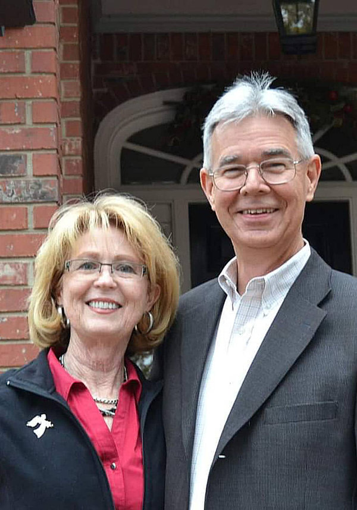

Blog post:
23 comments
To glorify God by making disciples of our neighbors and the nations through evangelism, baptism, and biblical teaching.
To see broken lives restored, faith grown, and the Gospel reach every person in our community.
If you're looking for a Baptist church in Cedar Park, where your family will be known, welcomed, and encouraged in faith, you're in the right place..
we are a small, relational Christian church committed to helping people grow closer to God, build meaningful community, and find lasting hope in Christ.

Whether you've followed Jesus for years or you're simply curious about church, you are welcome here. Talk with me on Wednesday nights
In a growing area like Cedar Park, it's easy to feel lost in the noise. We believe church should feel personal.At Shenandoah Baptist Church: You'll be greeted warmly. Your children will be cared for. Your questions are welcome. Your family will be known.
I love the ladies free sewing class.
What a precious community of believers
Shenandoah is one of the friendlist churches ever. Our Pastor preaches right out of God's word and welcomes our questions in Sunday School. Come join us and feel God's heart
If you've ever wondered what to expect at a small Baptist church, you're not alone. Maybe you're considering visiting for the first time. Maybe you grew up in church but haven't attended in years. Or maybe you've only experienced large churches and are curious what a smaller congregation feels like.
At a small Baptist church, the experience is personal, welcoming, and often surprisingly engaging. Here's what you can expect.
One of the biggest differences in a small Baptist church is that you won't blend into the crowd — because there isn't one.
If you're visiting a church like Shenandoah Baptist Church in Cedar Park, you can expect genuine warmth — not pressure and not perfection. Just real people who are glad you're there.
Midweek services are often where small churches truly shine.
On Wednesdays, children's and youth groups are intentionally small — often fewer than ten students per class. This means:
Pre-kindergarten children are lovingly led by moms from the church community.
Elementary students are taught by a certified special needs teacher who brings patience, structure, and care to the classroom.
Teenagers are guided by private Christian school teachers who take faith formation seriously and invest in meaningful conversations.
Small class sizes allow real connection instead of just crowd management.
Adults gather for Sunday school-style Bible study on Wednesday evenings. Expect:
And if you come regularly, you will almost certainly be invited to a potluck, fellowship meal, or another gathering. Food and fellowship often go hand in hand in a small Baptist church. It's part of how community grows.
On Sunday mornings, children begin by sitting in the main service during the music portion. This allows them to:
After the music, kids are dismissed to children's church for age-appropriate teaching.
The service itself focuses on biblical teaching, prayer, and worship — without heavy production layers or performance elements. The emphasis is on Scripture and spiritual growth.
In a small Baptist church, Sunday school is often interactive.
Participants are encouraged to:
Attendance may be modest, but that often creates space for deeper conversation and meaningful connection.
One thing you can absolutely expect at a small Baptist church is invitations.
You'll likely be invited to:
It's not about filling seats. It's about building relationships.